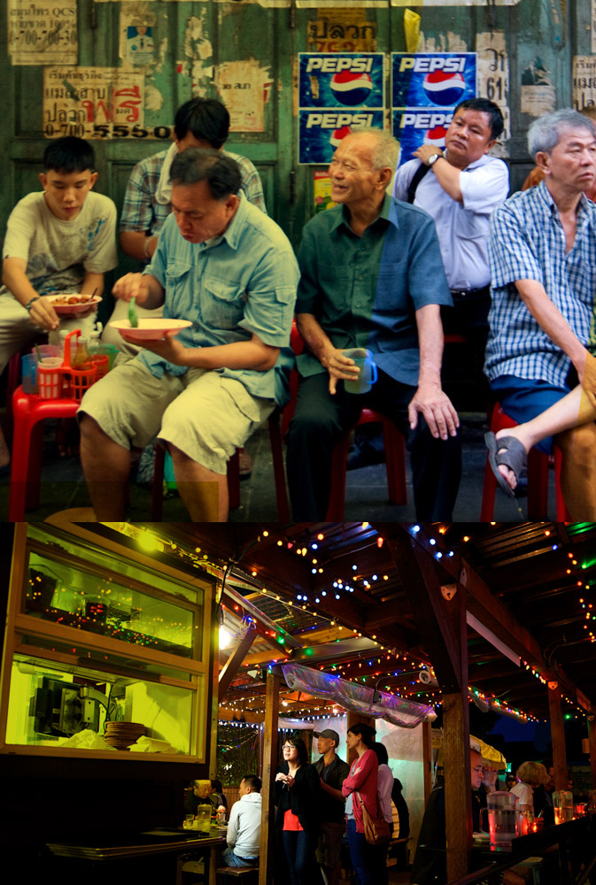

About pok pok
Pok Pok strives to create a strong sense of place through mindful reproduction of the food and food culture of Thailand and Southeast Asia.
andy ricker
Andy Ricker is the chef/owner of Pok Pok Restaurants. He first visited Thailand as a backpacker in 1987. Since then, he has spent several months each year living, traveling, eating, cooking and studying the food culture in Thailand and neighboring countries. He is also the founder and managing partner of Pok Pok Som (a drinking vinegar company) and is managing partner of Pok Pok Thaan (a charcoal importing enterprise). Among other achievements and accolades, Andy is a two time James Beard Award winner and best selling cookbook author. For information on consulting services and appearances, please send an email to info@pokpokpdx.com
